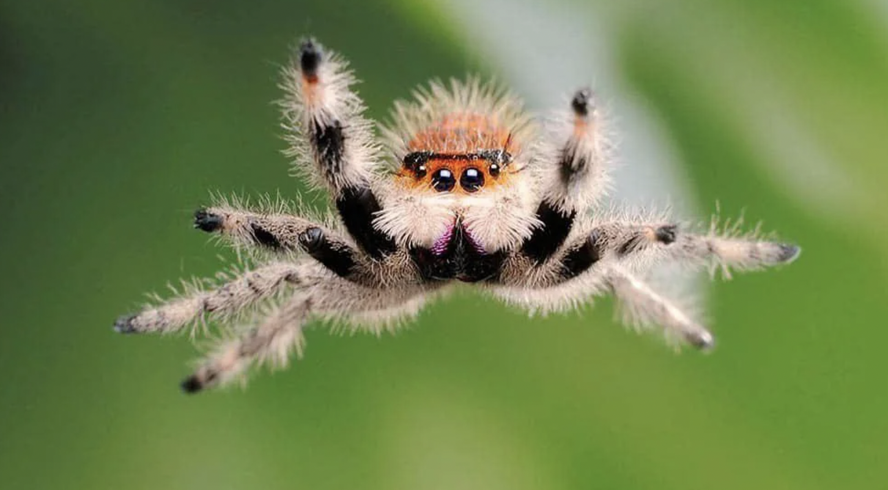
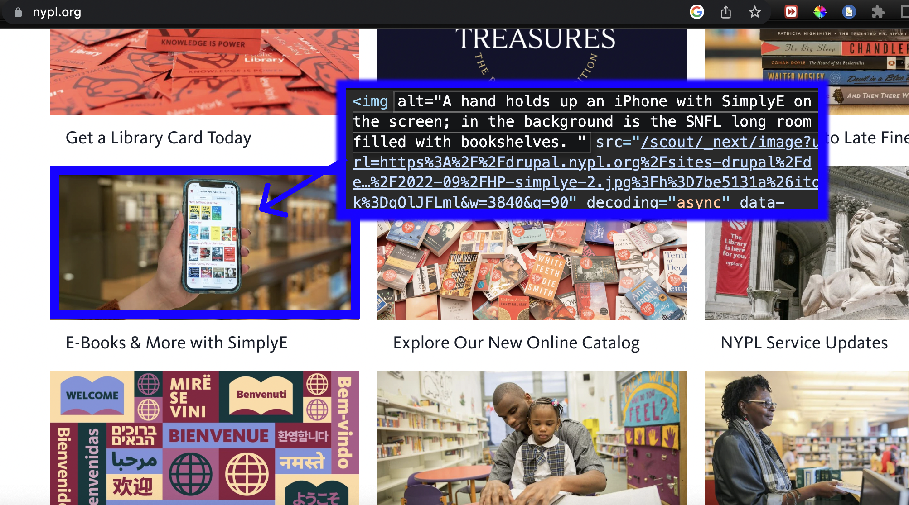

Prompt for image above: a photograph comes out of a typewriter
Writing Images: Exploring the data behind popular text to image generation models
This workshop provides a brief introduction to the data and technical processes behind popular text to image models through a combination of lecture and group activity. Specifically, we will focus on Stable Diffusion and take a ‘tour’ of the dataset behind it, LAION 5b - one of the largest text & image datasets. We will walk through the creation of LAION 5b, making pit-stops along the way to unpack technical terms and discuss potential ethical questions that arise. A lot of what I've learned about Stable Diffusion and LAION-5B is from this paper.
Common Crawl
LAION-5B uses data from the Common Crawl archive. Common Crawl is a 501(c)(3) nonprofit that has been 'crawling' or scanning the web since 2008 and collecting raw website data for open use. It crawls approximately once a month. It respects nofollow and robots.txt policies. These are ways to tell robots not to crawl your site. But this affects search engine results for your site. It is so much data that I couldn't figure out how to download a small portion of it for today but you can look into this on your own if you want here. This data comes in the form of a .warc file or a web archive file. This is a format for storing websites as archival files. As a side note, if you want to know more about archiving your websites, I suggest looking into conifer.
Alt Text
On websites, alt text is an important part of HTML code that allows us to describe images for things like vision-impaired visitors or as a replacement when image files don't load.
→ Let's dive deeper into Alt Text
CLIP Filtering

CLIP is a neural network trained on image-text pairs. In the context of Stable Diffusion and LAION-5B. CLIP is used to evaluate image descriptions and automatically filter out image-text pairs that don't have a strong relationship from the Common Crawl data. If image-text pairs were rated a score lower than a certain threshold, they were discarded. This allowed the creators of LAION to work with such a large database of images without individually evaluating each pair by hand. To understand how CLIP works and its biases, we should look at the data this model was trained on.
→ Let's dive deeper into CLIP
LAION-5B

LAION-5B is an open source dataset of over 5 billion CLIP-filtered image-text pairs. It is used to train Stable Diffusion.
→ Let's dive deeper into LAION-5B
Stable Diffusion
Ok we made it to Stable Diffusion! Stable Diffusion is a text-to-image generator. It is similar to MidJourney, Dall-E, & GooeyAI. What distinguishes Stable Diffusion is that it is open source. Because of this, I was able to peel back the layers and better understand the data it was trained on. With other models, that information is private. Now that we've taken a brief look at the data behind Stable Diffusion, let's give it a try and share our prompts and images with each other.
→ Try Stable Diffusion
→ Here are some additional readings/references
And here's an alternative version of Stable Diffusion that takes drawings as input:
→ Scribble Diffusion (2023)
And here is a similar 'ancestor' of Scribble Diffusion from 2017 called Pix2Pix for comparison:
→ Pix2Pix (2017)
Quick Links:
→ Alt Text
→ More about CLIP
→ Test your image descriptions with CLIP
→ See Sample of LAION dataset sorted by unsafe score
→ See Sample of LAION dataset sorted by aesthetic score
→ Readings & References
→ Caption Writing Exercise
→ Scribble Diffusion (2023)
→ Pix2Pix (2017)